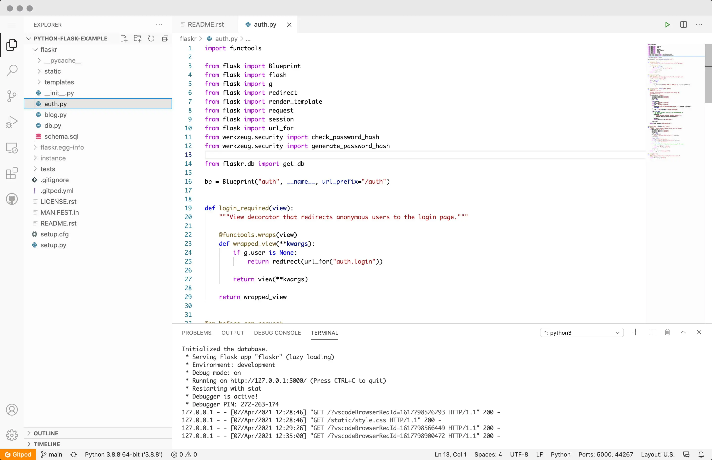

<section class="extension">
    <div class="container">
        <div class="extension__wrapper">
            <h2 class="extension__title">Remote-first. Secure by design.</h2>
            <div class="extension__img">
                
            </div>
            <p class="extension__text">You no longer need an over-powered laptop to code, Gitpod works just as smoothly
                on a Chromebook or iPad. All you need is a browser. Gitpod centralizes all source code and never stores
                it on insecure machines and networks.</p>
            <div class="extension__links">
                <div class="extension__links-btn chrome">Chrome Extension</div>
                <div class="extension__links-btn firefox">Firefox Extension</div>
            </div>
        </div>
    </div>
</section>